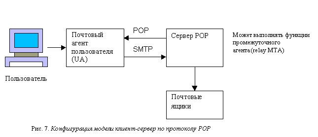

Протокол POP3
Post Office Protocol (POP) - протокол доставки почты
пользователю из почтового ящика почтового сервера РОР.
Многие концепции, принципы и понятия протокола POP выглядят и
функционируют подобно SMTP. Команды POP практически идентичны
командам SMTP, отличаясь в некоторых деталях. На рис.7
изображена модель клиент-сервер по протоколу POP. Сервер POP
находится между агентом пользователя и почтовыми ящиками.

В настоящее время существуют две версии протокола POP -
РОР2 и РОРЗ, обладающими примерно одинаковыми возможностями,
однако несовместимыми друг с другом. Дело в том, что у РОР2 и
РОРЗ разные номера портов протокола. Между ними отсутствует
связь, аналогичная связи между SMTP и ESMTP. Протокол РОРЗ не
является расширением или модификацией РОР2 - это совершенно
другой протокол. РОР2 определен в документе RFC 937 (Post
Office Protocol-Version 2, Butler, et al, 1985), a РОРЗ - в
RFC 1225 (Post Office Protocol-Version 3, Rose, 1991). Далее
кратко рассмотрим POP вообще и более подробно - РОРЗ. PОРЗ
разработан с учетом специфики доставки почты на персональные
компьютеры и имеет соответствующие операции для этого.
Назначение протокола РОРЗ
Ранее почтовые сообщения большинства сетей доставлялись
непосредственно от одного компьютера к другому. И если
пользователь часто менял рабочие компьютеры или один компьютер
принадлежал нескольким пользователям, существовали
определенные проблемы. В наши дни общепринята доставка
сообщения не на компьютеры пользователя, а в специальные
почтовые ящики почтового сервера организации, который
круглосуточно работает (включен).
Описание протокола РОРЗ
Конструкция протокола РОРЗ обеспечивает возможность
пользователю обратиться к своему почтовому серверу и изъять
накопившуюся для него почту. Пользователь может получить
доступ к РОР-серверу из любой точки доступа к Интернет. При
этом он должен запустить специальный почтовый агент (UA),
работающий по протоколу РОРЗ, и настроить его для работы со
своим почтовым сервером. Итак, во главе модели POP находится
отдельный персональный компьютер, работающий исключительно в
качестве клиента почтовой системы (сервера). Подчеркнем также,
что сообщения доставляются клиенту по протоколу POP, а
посылаются по-прежнему при помощи SMTP. То есть на компьютере
пользователя существуют два отдельных агента-интерфейса к
почтовой системе - доставки (POP) и отправки (SMTP).
Разработчики протокола РОРЗ называет такую ситуацию
"раздельные агенты" (split UA). Концепция раздельных
агентов кратко обсуждается в спецификации РОРЗ.
В протоколе РОРЗ оговорены три стадии процесса получения
почты: авторизация, транзакция и обновление. После того как
сервер и клиент РОРЗ установили соединение, начинается стадия
авторизации. На стадии авторизации клиент идентифицирует себя
для сервера. Если авторизация прошла успешно, сервер открывает
почтовый ящик клиента и начинается стадия транзакции. В ней
клиент либо запрашивает у сервера информацию (например, список
почтовых сообщений), либо просит его совершить определенное
действие (например, выдать почтовое сообщение). Наконец, на
стадии обновления сеанс связи заканчивается. В табл.7
перечислены команды протокола РОРЗ, обязательные для
работающей в Интернет реализации минимальной конфигурации.
Таблица 5. Команды протокола POP версии 3 (для
минимальной конфигурации)
| Команда |
Описание |
| USER |
Идентифицирует пользователя с
указанным именем |
| PASS |
Указывает пароль для пары
клиент-сервер |
| QUIT |
Закрывает
TCP-соединение |
| STAT |
Сервер возвращает количество
сообщений в почтовом ящике плюс размер почтового
ящика |
| LIST |
Сервер возвращает
идентификаторы сообщений вместе с размерами сообщений
(параметром команды может быть идентификатор
сообщения) |
| RETR |
Извлекает сообщение из
почтового ящика (требуется указывать
аргумент-идентификатор сообщения) |
| DELE |
Отмечает сообщение для
удаления (требуется указывать аргумент - идентификатор
сообщения) |
| NOOP |
Сервер возвращает
положительный ответ, но не совершает никаких
действий |
| LAST |
Сервер возвращает наибольший
номер сообщения из тех, к которым ранее уже
обращались |
| RSET |
Отменяет удаление сообщения,
отмеченного ранее командой DELE |
В протоколе РОРЗ определено несколько команд, но на них
дается только два ответа: +ОК (позитивный, аналогичен
сообщению-подтверждению АСK) и -ERR (негативный, аналогичен
сообщению "не подтверждено" NAK). Оба ответа подтверждают, что
обращение к серверу произошло и что он вообще отвечает на
команды. Как правило, за каждым ответом следует его
содержательное словесное описание. В RFC 1225 есть образцы
нескольких типичных сеансов РОРЗ. Сейчас мы рассмотрим
несколько из них, что даст возможность уловить
последовательность команд в обмене между сервером и
клиентом.
Авторизация пользователя
После того как программа установила TCP-соединение с портом
протокола РОРЗ (официальный номер 110), необходимо послать
команду USER с именем пользователя в качестве параметра. Если
ответ сервера будет +ОК, нужно послать команду
PASS с паролем этого пользователя:
CLIENT: USER kcope ERVER: +ОК CLIENT: PASS secret SERVER:
+ОК kcope's maildrop has 2 messages (320 octets) (В почтовом
ящике kcope есть 2 сообщения (320 байтов) ...)
Транзакции РОРЗ
После того как стадия авторизации окончена, обмен
переходит на стадию транзакции. В следующих примерах
демонстрируется возможный обмен сообщениями на этой
стадии.
Команда STAT возвращает количество
сообщений и количество байтов в сообщениях:
CLIENT: STAT
SERVER: +ОК 2 320
Команда LIST (без параметра) возвращает
список сообщений в почтовом ящике и их размеры:
CLIENT: LIST
SERVER: +ОК 2 messages (320 octets)
SERVER: 1 120
SERVER: 2 200
SERVER: . ...
Команда LIST с параметром возвращает
информацию о заданном сообщении:
CLIENT: LIST 2
SERVER: +ОК 2 200 ...
CLIENT: LIST 3
SERVER: -ERR no such message, only 2 messages in maildrop
Команда TOP возвращает заголовок, пустую
строку и первые десять строк тела сообщения:
CLIENT: TOP 10 SERVER: +ОК SERVER: <the POP3 server
sends the headers of the message,a blank line, and the first
10 lines of the message body> (сервер POP высылает
заголовки сообщений, пустую строку и первые десять строк тела
сообщения) SERVER: . ... CLIENT: TOP 100 SERVER: -ERR no such
message
Команда NOOP не возвращает никакой полезной
информации, за исключением позитивного ответа сервера. Однако
позитивный ответ означает, что сервер находится в соединении с
клиентом и ждет запросов:
CLIENT: NOOP
SERVER: +ОК
Следующие примеры показывают, как сервер POP3 выполняет
действия. Например, команда RETR извлекает
сообщение с указанным номером и помещает его в буфер местного
UA:
CLIENT: RETR 1 SERVER: +OK 120 octets SERVER: <the POPS
server sends the entire message here> (РОРЗ-сервер высылает
сообщение целиком) SERVER: . . . . . .
Команда DELE отмечает сообщение, которое
нужно удалить:
CLIENT: DELE 1
SERVER: +OK message 1 deleted ... (сообщение 1 удалено)
CLIENT: DELE 2 SERVER: -ERR message 2 already deleted
сообщение 2 уже удалено)
Команда RSET снимает метки удаления со всех
отмеченных ранее сообщений:
CLIENT: RSET
SERVER: +OK maildrop has 2 messages (320
octets)
(в почтовом ящике 2 сообщения (320 байтов)
)
Как и следовало ожидать, команда QUIT
закрывает соединение с сервером:
CLIENT: QUIT SERVER: +OK dewey POP3 server signing off
CLIENT: QUIT SERVER: +OK dewey POP3 server signing off
(maildrop empty) CLIENT: QUIT SERVER: +OK dewey POP3 server
signing off (2 messages left)
Обратите внимание на то, что отмеченные для удаления
сообщения на самом деле не удаляются до тех пор, пока не
выдана команда QUIT и не началась стадия
обновления. В любой момент в течение сеанса клиент имеет
возможность выдать команду RSET, и все
отмеченные для удаления сообщения будут восстановлены.
Источник: Исходники.ру